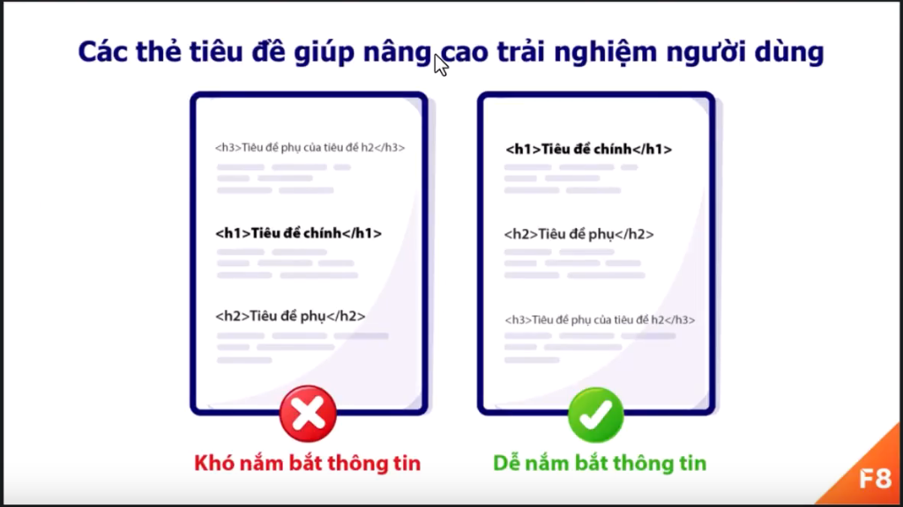

thẻ h2 được sử dụng làm tiêu đề của phần chính trong một trang web.Thẻ h2 được sử dụng làm tiêu đề con của thẻ h1
Ví dụ
Lưu ý, thẻ h2 được dùng làm tiêu đề con của thẻ h1 ở đây nghĩa là về mặt trình bày và ý nghĩa sử dụng, không phải đề cập tới việc sử dụng thẻ h2 vào bên trong thẻ h1
ví dụ sử dụng sai
sự kết hợp của các thẻ h trong một trang web giúp tại nên hệ thông phân cấp về nội dung. giúp người dử dụng và các công cụ tìm kiếm sẽ dễ dàng xác định được bố cục của một trang web

Tham khảo
Để tự xác định được cấu trúc thẻ h, đơn giản bạn chủ cần nghĩ như lúc đang viết một bài blog
Trong thực tế, cũng hiếm khi chúng ta phải sử dụng thẻ h6. vì các nội dung thường có từ 1 - 4 cấp độ. vậy nên chúng ta sẽ thường thấy thẻ h1 - h4 được sử dụng. Trong đó, thẻ h1 - h2 thường xuyên được sử dụng hơn cả
xác ddunhj các thẻ tiêu đề bằng ý nghĩa nội dung của nó, không phải dựa trên kích thước của nó. Bời vì kích thước còn phụ thuộc vào thiết kế và cách sử dụng CSS, CSS còn có thể thay đổi kích thước của thẻ
Tóm tắt